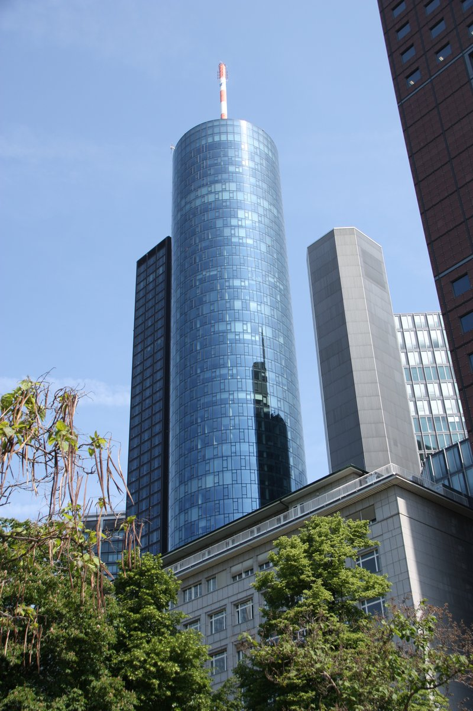

4.
Main Tower Observatory
↳ Frankfurt's only publicly accessible skyscraper observation deck, on the roof at the 56th floor of the 200-meter Main Tower. Panoramic 360-degree views cover the financial district, the Taunus hills to the north, and the Odenwald on clear days.
🏛️ Sunday - Thursday 10:00am - 9:00pm · Friday - Saturday 10:00am - 11:00pm
⏰ ~45 min
